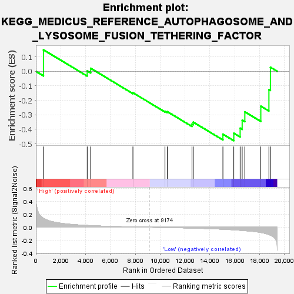
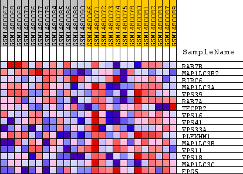
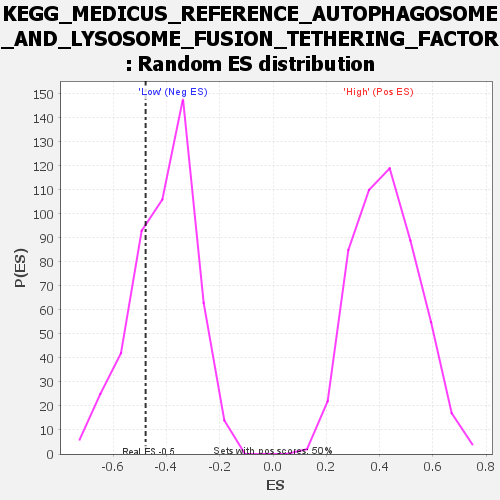

| Dataset | WG6v3.MRPL3.cls#High_versus_Low.MRPL3.cls#High_versus_Low_repos |
| Phenotype | MRPL3.cls#High_versus_Low_repos |
| Upregulated in class | Low |
| GeneSet | KEGG_MEDICUS_REFERENCE_AUTOPHAGOSOME_AND_LYSOSOME_FUSION_TETHERING_FACTOR |
| Enrichment Score (ES) | -0.47836384 |
| Normalized Enrichment Score (NES) | -1.1641062 |
| Nominal p-value | 0.27565393 |
| FDR q-value | 1.0 |
| FWER p-Value | 1.0 |

| SYMBOL | TITLE | RANK IN GENE LIST | RANK METRIC SCORE | RUNNING ES | CORE ENRICHMENT | |
|---|---|---|---|---|---|---|
| 1 | RAB7B | RAB7B | 611 | 0.138 | 0.1484 | No |
| 2 | MAP1LC3B2 | MAP1LC3B2 | 4131 | 0.028 | 0.0032 | No |
| 3 | BIRC6 | BIRC6 | 4411 | 0.025 | 0.0211 | No |
| 4 | MAP1LC3A | MAP1LC3A | 7810 | 0.005 | -0.1476 | No |
| 5 | VPS39 | VPS39 | 10389 | -0.004 | -0.2749 | No |
| 6 | RAB7A | RAB7A | 10577 | -0.005 | -0.2781 | No |
| 7 | TECPR2 | TECPR2 | 12566 | -0.013 | -0.3633 | No |
| 8 | VPS16 | VPS16 | 12664 | -0.014 | -0.3504 | No |
| 9 | VPS41 | VPS41 | 15051 | -0.031 | -0.4332 | Yes |
| 10 | VPS33A | VPS33A | 15928 | -0.040 | -0.4266 | Yes |
| 11 | PLEKHM1 | PLEKHM1 | 16437 | -0.047 | -0.3919 | Yes |
| 12 | MAP1LC3B | MAP1LC3B | 16601 | -0.049 | -0.3365 | Yes |
| 13 | VPS11 | VPS11 | 16815 | -0.052 | -0.2793 | Yes |
| 14 | VPS18 | VPS18 | 18101 | -0.081 | -0.2401 | Yes |
| 15 | MAP1LC3C | MAP1LC3C | 18753 | -0.114 | -0.1258 | Yes |
| 16 | EPG5 | EPG5 | 18875 | -0.123 | 0.0282 | Yes |

